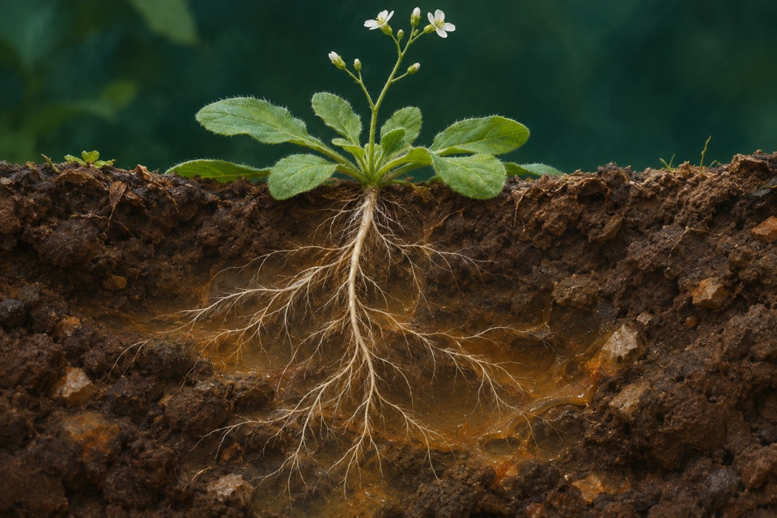
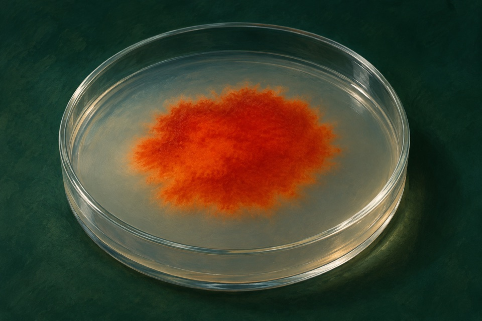
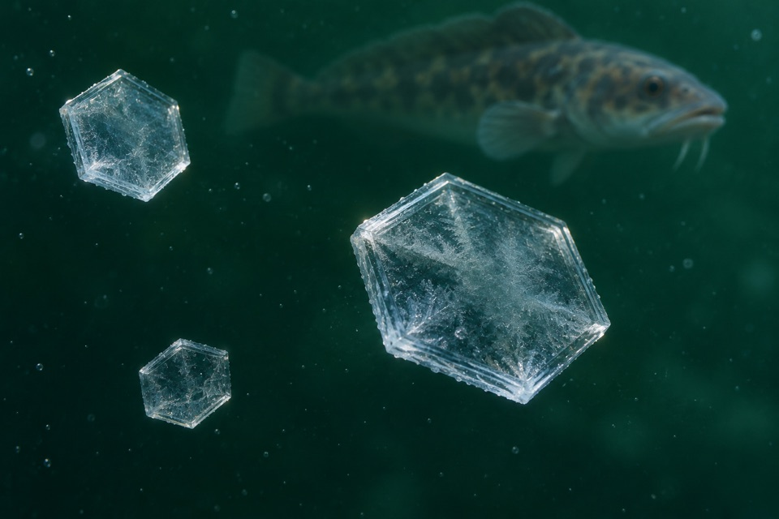
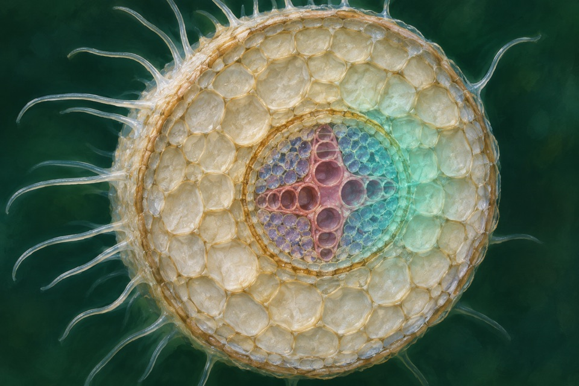

Module 01
Plastid starch accumulation
Measure starch accumulation and the enzyme activity supplying activated glucose.
Evidence recordOpen any of the ten modules to see the reported observation, its sources, and the research questions still open.
Measure starch accumulation and the enzyme activity supplying activated glucose.
Evidence record
Measure vanillin formation from ferulic acid in a defined bioconversion.
Evidence record
Measure anthocyanin composition in peel and flesh; visible purple color is a separate observation.
Evidence record
Measure DMSP formation and distinguish it from DMS release.
Evidence record
Measure ferrous iron uptake separately from other transported metals.
Evidence record
Measure L-lactate produced by an engineered yeast culture.
Evidence record
Resolve chemically identified astaxanthin from precursor carotenoids and pathway intermediates.
Evidence record
Measure ice crystal growth and morphology under defined protein conditions.
Evidence record
Measure movement of boron from roots toward shoots under boron limitation.
Evidence record
Detect organized membrane-associated magnetic nanocrystals.
Evidence record